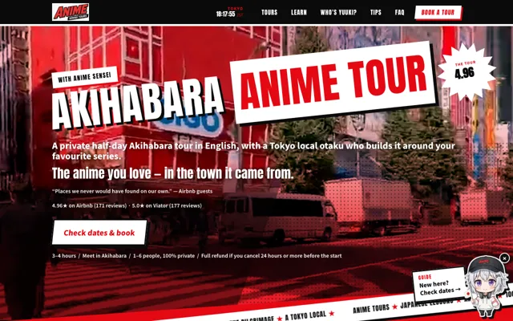
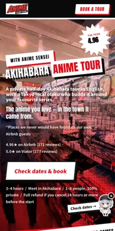
t1赤基調・斜め全開
赤地に黒の斜めスラブ。見出しは白い札を-6°で切り込み、セクションの境目も全部斜めに切る最も攻撃的な案
PC・スマホで開く →
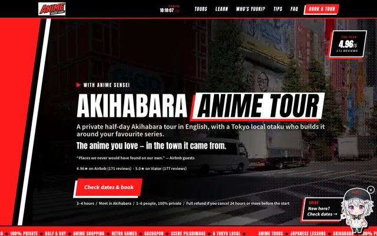
t2黒基調・メニュー画面風
黒地にメニュー項目のように傾いた白帯。赤い三角カーソルと反転ハイライトで「選んでいる」感を出す案
PC・スマホで開く →
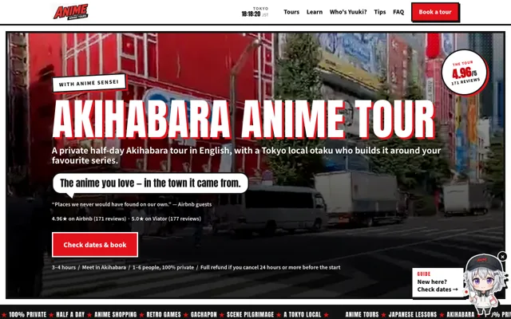
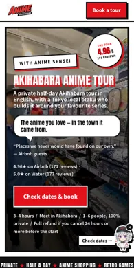
t3白＋ハーフトーン漫画風
白地に網点と吹き出し。カードを漫画のコマ割りのように黒枠で区切った、いちばん読みやすい案
PC・スマホで開く →
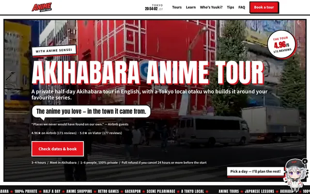
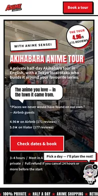
t3 修正版白＋ハーフトーン漫画風（総点検済み）
選ばれたt3を総点検して31件直した版。ロゴの白地を抜き、ナビゲーターは開いた直後だけ吹き出しで一言しゃべってアイコンに戻ります。文字・リンク・写真はt3と同じ（機械照合済み）。元のt3は左隣のカードから見られます
修正版を開く →
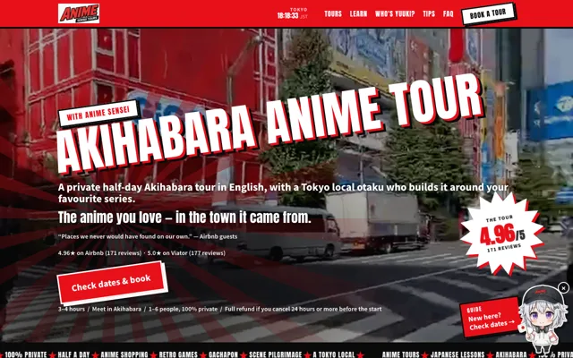
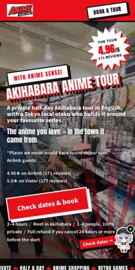
t4バーストと星のポップ全開
星型バーストと放射線が主役。評価・実績・料金をバーストの中に入れて、数字で殴る案
PC・スマホで開く →
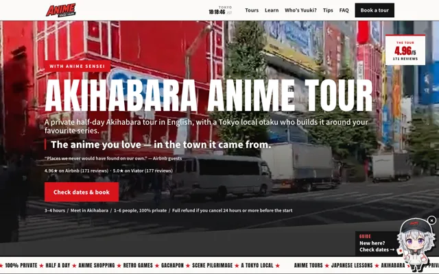
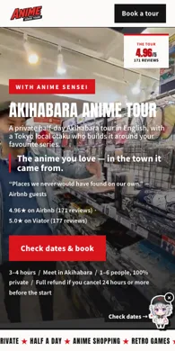
t5斜め帯と引用の編集系
見出しを全幅の斜め帯に載せ、レビューを誌面のプルクオートとして組む。赤は差し色に絞った落ち着いた編集系の案
PC・スマホで開く →